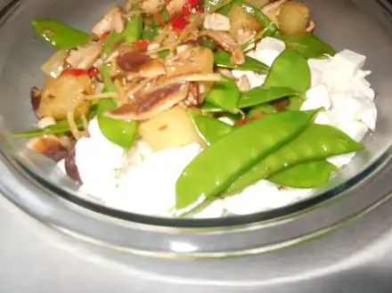
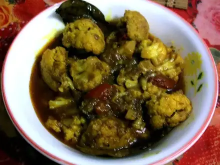
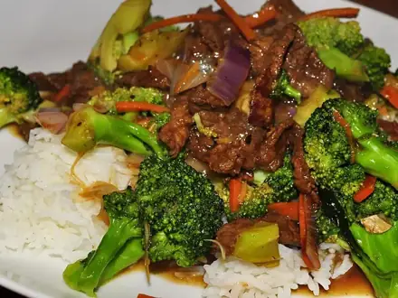
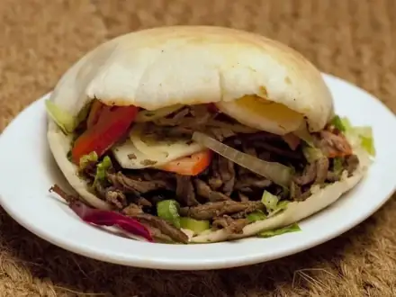
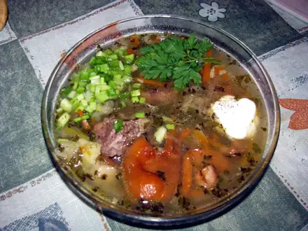
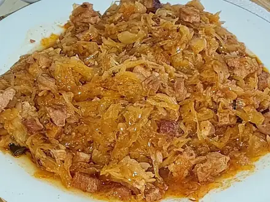
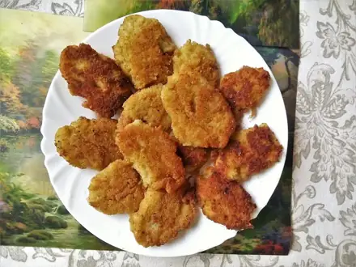
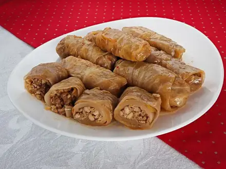
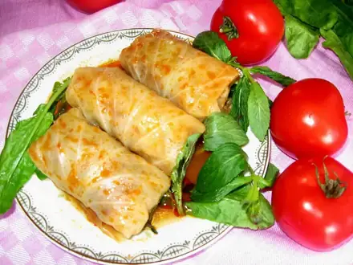
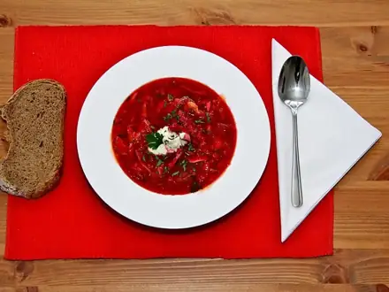

Что приготовить из капусты
Белокочанная, цветная и брокколи: щи, тушёная капуста, салаты. 15 рецептов: у каждого время, калории и БЖУ на порцию, пошаговые инструкции и список покупок
 Овощи на пару20 мин · 127 ккал · Б 5 г · Гарнир
Овощи на пару20 мин · 127 ккал · Б 5 г · Гарнир Пюре из кабачка и цветной капусты25 мин · 46 ккал · Б 2 г · Гарнир
Пюре из кабачка и цветной капусты25 мин · 46 ккал · Б 2 г · Гарнир
Тофу с овощами и соевым соусом30 мин · 330 ккал · Б 16 г · Второе блюдо
Цветная капуста в духовке35 мин · 209 ккал · Б 7 г · Гарнир
Говядина с брокколи35 мин · 466 ккал · Б 34 г · Второе блюдо Индейка на пару с овощами35 мин · 292 ккал · Б 50 г · Второе блюдо
Индейка на пару с овощами35 мин · 292 ккал · Б 50 г · Второе блюдо
Шаурма домашняя в лаваше40 мин · 612 ккал · Б 41 г · Второе блюдо Овощной суп-пюре40 мин · 94 ккал · Б 3 г · Суп
Овощной суп-пюре40 мин · 94 ккал · Б 3 г · Суп
Щи из свежей капусты45 мин · 119 ккал · Б 4 г · Суп
Тушёная капуста50 мин · 191 ккал · Б 6 г · Гарнир
Постные котлеты из капусты60 мин · 260 ккал · Б 7 г · Второе блюдо
Ленивые голубцы70 мин · 552 ккал · Б 24 г · Второе блюдо Винегрет75 мин · 178 ккал · Б 4 г · Салат
Винегрет75 мин · 178 ккал · Б 4 г · Салат
Долма в капустных листьях110 мин · 417 ккал · Б 24 г · Второе блюдо
Борщ150 мин · 349 ккал · Б 23 г · Суп
Другие подборки
- Что приготовить из курицы
- Что приготовить из фарша
- Что приготовить из мяса
- Что приготовить из рыбы
- Что приготовить из картошки
- Что приготовить из яиц
- Что приготовить из творога
- Что приготовить из кабачков
- Что приготовить из грибов
- Что приготовить из риса
- Что приготовить из макарон
- Что приготовить из гречки
- Быстрый ужин за 30 минут
- Быстрый завтрак за 20 минут
- Что приготовить на скорую руку
- ПП-рецепты: лёгкие блюда до 400 ккал
- Белковые блюда: от 25 г белка на порцию
- Дешёвые рецепты из простых продуктов
- Что приготовить ребёнку
- Постные блюда
- Блюда на пару
- Что приготовить в духовке
- Простые супы
- Простые салаты
- Выпечка и десерты
- Блюда на праздничный стол
- Что приготовить из остатков